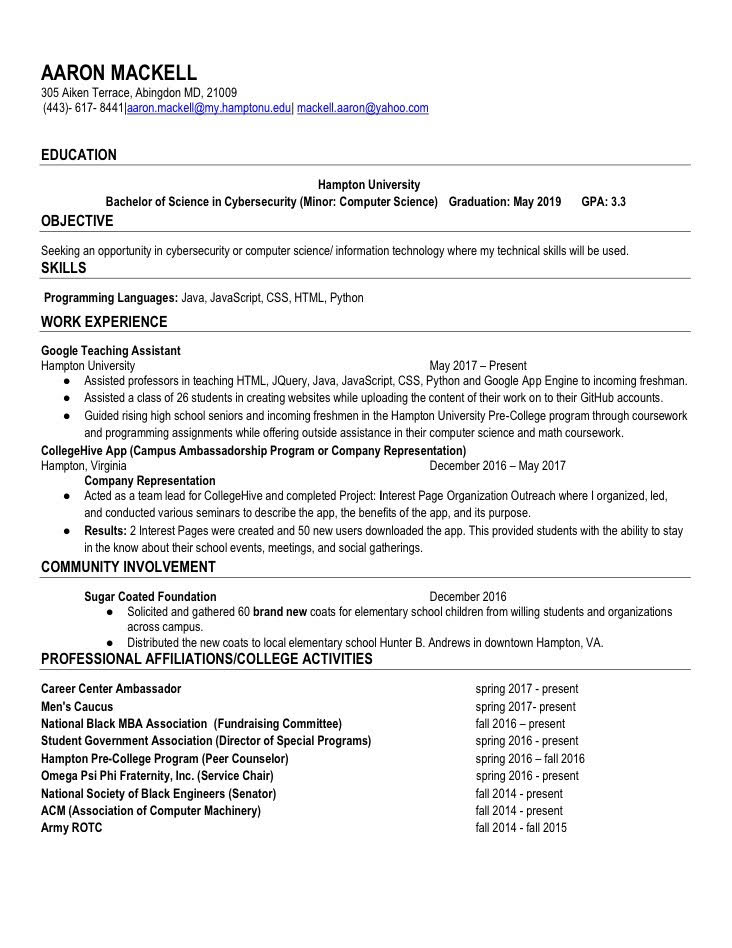

Welcome to Aaron Mackell's Official Resume Page!

AMackSitez!
Close
Who is Aaron Mackell?
Est. February 1996
Aaron Mackell is a Cyber-security major (Computer science minor) student born in Baltimore, Maryland. He is the middle sibling between older sister Alyssa Mackell and younger brother Angelo Mackell. This year Aaron proudly serves as the 2017 – 2018 Senator and member of The National Society of Black Engineers (NSBE). Aaron is also a member of the Men’s Caucus, Career Center Ambassador program, National Black MBA Association, Hampton University Pre-College Peer Helpers program, ACM (Association of Computer Machinery) and the Army ROTC. Aaron is very passionate about giving back to the community and uplifting those around him. Aaron has comprised various service projects and initiatives to provide service to those in need. Aaron continues to be a leader in both the classroom and outside world as he understands the responsibility that comes with being a role model to the youth and paving the way for them. Upon graduation Aaron plans to obtain a Masters of Cyber-security. He has aspirations of one day working as a Chief Information Security Officer in the cyber-security industry. Aaron also serves as founder and financial manager of SupremeEatz gourmet services! SupremeEatz is dedicated to providing food services through a college based network to supply the best quality foods at a sufficient rate. Aaron is also a proud member of Omega Psi Phi Fraternity Inc. He lives by a scripture that he implements in his daily life, 1Corinthians 16:13 - "Be on your guard; stand firm in the faith; be courageous; be strong!